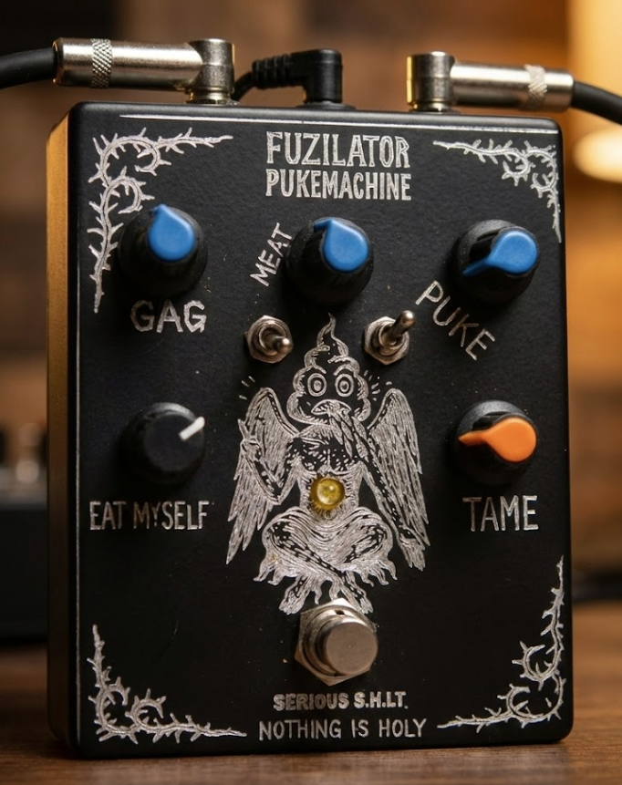

"They are all unique but also they are the same. You are not special, if everyone is special. You're just like everyone else."
Fuzilator PukeMachine
MK.I — DUAL GAIN STAGE FUZZ
$333 USD / 1,100 ILS
Limited run of 13 units. Handmade in Haifa.
What is it?
Dual LPB2 gain stages with a tone stack between them. High gain on both stages—push hard for gated fuzz, back off for clean drive.
> SIGNAL PATH:
INPUT -> [LPB2 GAIN A] -> [LPB2 GAIN B] -> [VOLTAGE STARVE] -> OUTPUT
+ FEEDBACK LOOP // + INTERNAL PIEZO
INPUT -> [LPB2 GAIN A] -> [LPB2 GAIN B] -> [VOLTAGE STARVE] -> OUTPUT
+ FEEDBACK LOOP // + INTERNAL PIEZO
Key Features
- Feedback Loop: "Eat myself" switch activates self-oscillation. All knobs affect the feedback pitch and texture.
- Internal Piezo: Built-in contact mic inside the enclosure. Picks up box resonance, taps, and screams.
- Guitar Volume Interaction: Your guitar's volume knob becomes a pitch control for the oscillation.
- Standalone Mode: Functions as a noise box when nothing is plugged into the input.
Power9V Neg
BypassTrue
Price$333 / 1,100 ₪
Versatility
Works with guitar, baritone, bass, synthesizers, and drums. Range goes from subtle clean drive to hellish self-destruction.
פוזילטור פיוק-משין
סימן 1 — פאז גיין כפול
1,100 ₪ / $333 USD
מהדורה מוגבלת של 13 יחידות. עבודת יד בחיפה.
מה זה?
שני שלבי גיין LPB2 עם טון-סטאק ביניהם. גיין גבוה בשני השלבים - דחפו חזק לפאז מקוטע, או הורידו ווליום לדרייב נקי.
> SIGNAL PATH:
INPUT -> [LPB2 GAIN A] -> [LPB2 GAIN B] -> [VOLTAGE STARVE] -> OUTPUT
+ FEEDBACK LOOP // + INTERNAL PIEZO
INPUT -> [LPB2 GAIN A] -> [LPB2 GAIN B] -> [VOLTAGE STARVE] -> OUTPUT
+ FEEDBACK LOOP // + INTERNAL PIEZO
פיצ'רים מרכזיים
- לולאת פידבק: מתג "Eat myself" שמפעיל אוסילציה עצמית. כל הכפתורים משפיעים על גובה הצליל והטקסטורה.
- פיאזו פנימי: מיקרופון מגע מובנה בתוך המארז. קולט את הרזוננס של הקופסה, מכות וצרחות.
- אינטראקציה עם ווליום: כפתור הווליום בגיטרה שלכם הופך לשלוט פיץ' של האוסילציה.
- מצב עצמאי: מתפקד כמכונת רעש כשאף כלי לא מחובר לכניסה.
חשמל9V Neg
בייפאסTrue
מחיר1,100 ₪ / $333
ורסטיליות
עובד עם גיטרה, בריטון, בס, סינתיסייזרים ותופים. הטווח נע מדרייב נקי ועדין ועד להרס עצמי גיהנומי.